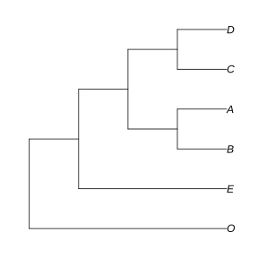
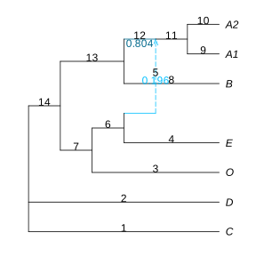
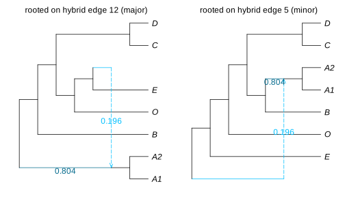
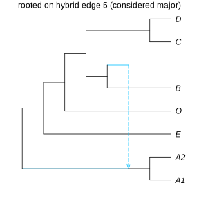
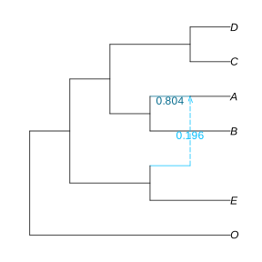
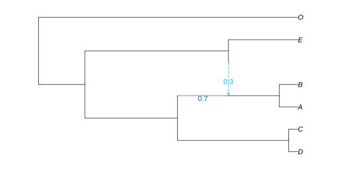

Comparing and manipulating networks
Examples below follow those in Getting a Network.
Comparing networks / trees
Is the SNaQ tree (network with h=0) the same as the ASTRAL tree? We can calculate their Robinson-Foulds distance:
julia> hardwiredClusterDistance(astraltree, net0, false)
0The last option false is to consider topologies as unrooted. The RF distance is 0, so the two unrooted topologies are the same. If we had considered them as rooted, with whatever root they currently have in their internal representation, we would find a difference:
julia> hardwiredClusterDistance(astraltree, net0, true)
5Re-rooting trees and networks
We can re-root our networks with the outgroup, O, and then re-compare the ASTRAL tree and the SNaQ tree as rooted topologies (and find no difference):
julia> rootatnode!(astraltree, "O")
HybridNetwork, Rooted Network
10 edges
11 nodes: 6 tips, 0 hybrid nodes, 5 internal tree nodes.
tip labels: E, O, C, D, ...
(O,(((C,D)100.0:3.029,(B,A)100.0:1.324)100.0:0.464,E));
julia> rootatnode!(net0, "O")
HybridNetwork, Rooted Network
10 edges
11 nodes: 6 tips, 0 hybrid nodes, 5 internal tree nodes.
tip labels: C, D, B, A, ...
(O,(E,((B,A):1.396,(C,D):10.0):0.485));
julia> hardwiredClusterDistance(astraltree, net0, true)
0using PhyloPlots, RCall
R"name <- function(x) file.path('..', 'assets', 'figures', x)"
R"svg(name('net0_O.svg'), width=4, height=4)"
R"par"(mar=[0,0,0,0])
plot(net0, :R);
R"dev.off()"
Note that, as in previous chapters, we use the possibilities of RCall to save the plot. We only show this commands once, but they will be run behind the scene each time a plot is called.
After trees/networks are rooted with a correct outgroup, their visualization is more meaningful.
Networks can be re-rooted at a given node or along a given edge. Get help (type ?) on the functions rootatnode! and rootonedge! for more info. There are examples in the Bootstrap section.
If the network is plotted with crossing edges, you may identify ways to rotate the children edges at some nodes to untangle some crossing edges. This can be done using the function rotate!. See an example in the Bootstrap section, or type ? then rotate!.
What if the root conflicts with the direction of a reticulation?
With 1 hybridization or more, the direction of hybrid edges constrain the position of the root. The root cannot be downstream of hybrid edges. Any hybrid node has to be younger than, or of the same age as both of its parents. So time has to flow "downwards" of any hybrid node, and the root cannot be placed "below" a hybrid node. An attempt to re-root the network at a position incompatible with hybrid edges will fail, with a RootMismatch error. To show an example, let's use the network below. We plotted the edge numbers, because we will want to use them later to place the root.
net7taxa = readTopology("(C,D,((O,(E,#H7:::0.196):0.314):0.664,(B,((A1,A2))#H7:::0.804):10.0):10.0);")
plot(net7taxa, :R, showGamma=true, showEdgeNumber=true, tipOffset=0.2);
Let's imagine that the A1 and A2 are our outgroups, and we estimated the network above. According to this network, time must flow from the hybrid node towards A1 and A2. So any attempt to reroot the network with A1 as outgroup, or with A2 as outgroup, or with the A clade (on edge 11), will fail with a RootMismatch error:
rootatnode!(net7taxa, "A1"); # ERROR: RootMismatch: non-leaf node 5 had 0 children. ...
rootatnode!(net7taxa, "A2"); # ERROR: RootMismatch (again)
rootonedge!(net7taxa, 11); # ERROR: RootMismatch (again)In this case, however, it is possible to root the network on either parent edge of the hybrid node. These edges have numbers 12 and 5, based on the plot above. We get these 2 rooted versions of the network:
R"layout(matrix(1:2,1,2))";
rootonedge!(net7taxa, 12);
plot(net7taxa, :R, showGamma=true, tipOffset=0.2);
R"mtext"("rooted on hybrid edge 12 (major)", line=-1)
rootonedge!(net7taxa, 5);
plot(net7taxa, :R, showGamma=true, tipOffset=0.2);
R"mtext"("rooted on hybrid edge 5 (minor)", line=-1);
On the second plot, the A clade does not appear to be an outgroup, but this is just because the plot follows the major tree primarily, based the major hybrid edges (those with γ>0.5). We can display the exact same network differently, by changing the γ inheritance values to invert the major/minor consideration of the hybrid edges.
net7taxa.edge[5] # just to check that it's one of the 2 hybrid edges of interest
setGamma!(net7taxa.edge[5], 0.501) # switch major/minor edges
plot(net7taxa, :R, tipOffset=0.2); # not showing gamma values, because we changed them artificially
R"mtext"("rooted on hybrid edge 5 (considered major)", line=-1);
Conclusion, in this particular example: it is possible to re-root the network to a place where the A clade is indeed an outgroup. But it did require some care, and we discovered that there are 2 acceptable rooting options. The first is more plausible, if we think that the species tree is the major tree, meaning that any gene flow or introgression event replaced less than 50% of the genes in the recipient population.
In other cases, it may not be possible to re-root the network with a known outgroup. It would be the case if A1 was the only outgroup, and if A2 was an ingroup taxon. In such a case, the outgroup knowledge tells us that our estimated network is wrong. One (or more) reticulation in the network must be incorrect. Its placement might be correct, but then its direction would be incorrect. If the network was estimated via snaq!, check tips about Candidate networks compatible with a known outgroup.
Extracting the major tree
We can also compare the networks estimated with h=0 (net0) and h=1 (net1):
julia> rootatnode!(net1, "O"); # the ; suppresses screen output
HybridNetwork, Rooted Network
13 edges
13 nodes: 6 tips, 1 hybrid nodes, 6 internal tree nodes.
tip labels: C, D, O, E, ...
(O,((E,#H7:::0.196):0.314,((B,(A)#H7:::0.804):10.0,(C,D):10.0):0.664));
julia> hardwiredClusterDistance(net0, net1, true)
2plot(net1, :R, showGamma=true);
They differ by 2 clusters: that's because A is of hybrid descent in net1, not in net0.
To beyond this hybrid difference, we can extract the major tree from the network with 1 hybridization, that is, delete the hybrid edge supported by less than 50% of genes. Then we can compare this tree with the ASTRAL/SNaQ tree net0.
julia> tree1 = majorTree(net1); # major tree from net1
julia> hardwiredClusterDistance(net0, tree1, true)
0They are identical (at distance 0), so here the species network with 1 hybrid node is a refinement of the estimated species tree (this needs not be the case always).
Is the SNaQ network with 1 hybrid node the same as the true network, the one that was initially used to simulate the data?
(digression on the data: gene trees were simulated under the coalescent along some "true" network, then 500 base-pair alignments were simulated along each gene tree with the HKY model, gene trees were estimated from each alignment with RAxML, and these estimated gene trees served as input to both ASTRAL and SNaQ.)
The true network is shown below, correctly rooted at the outgroup O, and plotted with branch lengths proportional to their values in coalescence units:
julia> truenet = readTopology("((((D:0.4,C:0.4):4.8,((A:0.8,B:0.8):2.2)#H1:2.2::0.7):4.0,(#H1:0::0.3,E:3.0):6.2):2.0,O:11.2);");
julia> hardwiredClusterDistance(net1, truenet, true)
4plot(truenet, :R, useEdgeLength=true, showGamma=true);
Our estimated network is not the same as the true network:
- the underlying tree is correctly estimated
- the origin of gene flow is correctly estimated: E
- the target of gene flow is not correctly estimated: it was the lineage ancestral to (A,B), but it is estimated to be A only.
For networks, the distance here is the hardwired cluster distance: the number of hardwired clusters found in one network and not in the other. The hardwired cluster associated with an edge is the set of all tips descendant from that edge, i.e. all tips that inherited at least some genetic material from that edge.
Displayed trees and subnetworks
We can extract all trees displayed in a network. These trees are obtained by picking one parent hybrid edge at each hybrid node, and dropping the other parent hybrid edge. We can choose to pick the "important" hybrid edges only, with heritability γ at or above a threshold. Below we use a γ threshold of 0, so we get all displayed trees:
julia> t = displayedTrees(net1, 0.0) # list of trees displayed in network
2-element Vector{HybridNetwork}:
HybridNetwork, Rooted Network
10 edges
11 nodes: 6 tips, 0 hybrid nodes, 5 internal tree nodes.
tip labels: C, D, O, E, ...
(O,(((B,A):10.0,(C,D):10.0):0.664,E));
HybridNetwork, Rooted Network
10 edges
11 nodes: 6 tips, 0 hybrid nodes, 5 internal tree nodes.
tip labels: C, D, O, E, ...
(O,((E,A):0.314,((C,D):10.0,B):0.664));
julia> writeTopology(t[1], round=true)
"(O,(((B,A):10.0,(C,D):10.0):0.664,E));"
julia> writeTopology(t[2], round=true)
"(O,((E,A):0.314,((C,D):10.0,B):0.664));"If we decide to keep edges with γ>0.2 only, then we are left with a single tree in the list (the major tree). This is because our example has 1 hybrid node with minor γ=0.196.
julia> t = displayedTrees(net1, 0.2)
1-element Vector{HybridNetwork}:
HybridNetwork, Rooted Network
10 edges
11 nodes: 6 tips, 0 hybrid nodes, 5 internal tree nodes.
tip labels: C, D, O, E, ...
(O,(((B,A):10.0,(C,D):10.0):0.664,E));We can also delete all "non-important" reticulations, those with a minor heritability γ below some threshold. The function below changes our network net1, as indicated by its name ending with a !.
julia> deleteHybridThreshold!(net1, 0.1)
HybridNetwork, Rooted Network
13 edges
13 nodes: 6 tips, 1 hybrid nodes, 6 internal tree nodes.
tip labels: C, D, O, E, ...
(O,((E,#H7:::0.196):0.314,((B,(A)#H7:::0.804):10.0,(C,D):10.0):0.664));Nothing happened to our network: because its γ is above 0.1. But if we set the threshold to 0.3, then our reticulation disappears:
julia> deleteHybridThreshold!(net1, 0.3)
HybridNetwork, Rooted Network
10 edges
11 nodes: 6 tips, 0 hybrid nodes, 5 internal tree nodes.
tip labels: C, D, O, E, ...
(O,(((B,A):10.0,(C,D):10.0):0.664,E));See also function displayedNetworkAt! to get the network with a single reticulation of interest, and eliminate all other reticulations.